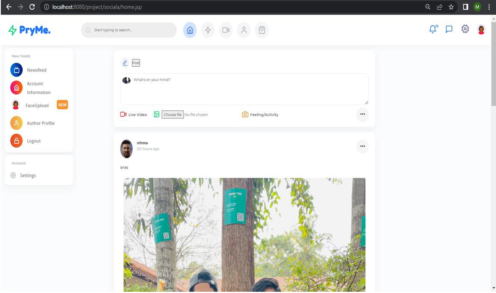
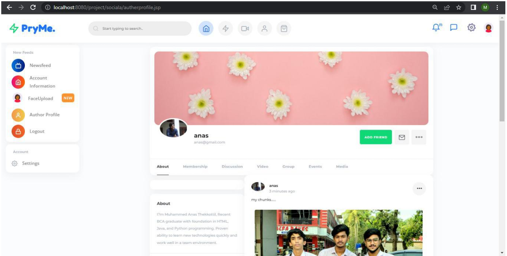

Project Snapshots



My Privacy My Decision is a secure web-based social media platform designed to prioritize user privacy in photo sharing. Developed using Java, MySQL, HTML/CSS, JavaScript, and OpenCV for face detection and recognition, the platform ensures users maintain control over their photos and personal data.
When a user uploads a photo as part of a post, the system employs Haar cascade-based face detection to identify faces and matches them against a database of trained facial data. If recognized individuals are detected, the system notifies them and requires their approval before the post is made public, ensuring explicit consent for photo sharing. This enhances user privacy by preventing unauthorized sharing of images containing their likeness.
The system includes:
Features include user registration/login, photo uploading with granular privacy controls, and an approval/notification system that alerts users when they are detected in photos, requiring their consent before posts go public. The platform employs Haar cascade-based face detection to crop and store facial data, using K-Means clustering for recognition, while ensuring secure storage with encryption and access controls. Built with NetBeans 8.0.2 and deployed on GlassFish Server, it offers an admin panel for user and content management, providing a robust, user-friendly solution for privacy-conscious photo sharing.